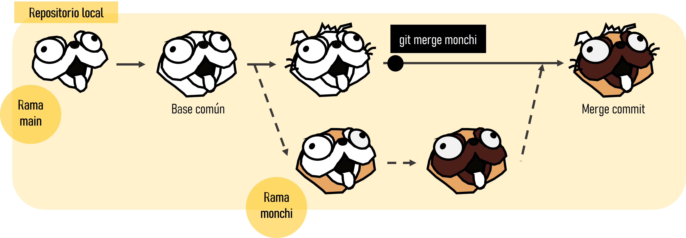

[1] "awk" "bash" "coffee" "gawk" "groovy" "haskell"
[7] "lein" "mysql" "node" "octave" "perl" "php"
[13] "psql" "Rscript" "ruby" "sas" "scala" "sed"
[19] "sh" "stata" "zsh" "asis" "asy" "block"
[25] "block2" "bslib" "c" "cat" "cc" "comment"
[31] "css" "ditaa" "dot" "embed" "eviews" "exec"
[37] "fortran" "fortran95" "go" "highlight" "js" "julia"
[43] "python" "R" "Rcpp" "sass" "scss" "sql"
[49] "stan" "targets" "tikz" "verbatim" "ojs" "mermaid"
[55] "include" Manejo y visualización de datos en R (Parte IV - Trabajo reproducible y colaborativo)
Actividad formativa de doctorado de la Universidad de Alcalá
Potencialidad de R más haya de gestión y visualización
¿Para qué utilizáis R en vuestro día a día?
- Ejemplos de qué es una función y programación funcional
¿Para qué creéis que se puede utilizar? ¿O para qué habéis visto/oído que se utilice?
- Ejemplos de redacción de papers
¿Para qué os gustaría que se utilizará?
- Ejemplos de páginas web, aplicaciones shiny
¿Hacía dónde creéis que se dirigirá el futuro de la programación (R)?
Ejemplos de inteligencia artificial
Constante dinamismo de los lenguajes de programación
¿Qué tienen en común todos estos ejemplos que comentamos?
Colaboración
La reproducibilidad como pilar del método científico
Big data
Quarto (https://quarto.org/)
Git (https://git-scm.com/)
GitHub (https://github.com/)
Problemas comunes en nuestro día a día
Sobreescritura de un archivo
Versiones finales infinitas

Trabajo por error en una versión que no era la final
Creación de copias “en conflicto” cuando dos personas trabajan a la vez
Ediciones sin control de cambios

Quarto
Quarto (https://quarto.org/) es un sistema de publicación científica y técnica de código abierto construido sobre Pandoc. Convierte los formatos de texto plano o los formatos mixtos (p. ej. .qmd, .Rmd, .md, .ipynb) en informes estáticos PDF, word, HTML, etc. Puede entrelazar texto narrativo y código para producir resultados con un formato elegante en forma de documentos, páginas web, entradas de blog, libros, etc.
Utiliza programación literaria, un paradigma de programación creado por Donald E. Knuth que consiste en escribir la lógica del programa en un lenguaje humano (p. ej. inglés, castellano) con fragmentos de código e instrucciones.

Algunas de las razones por las que es recomendable utilizar Quarto son la reproducibilidad, el aumento de la eficiencia de trabajo (a medio-largo plazo), centrarse en el texto sin perder tiempo en el diseño y la producción de documentos de alta calidad.
La diferencia principal de Quarto respecto a R Markdown es que se ha generado para la colaboración de más de una comunidad (es decir, no solo usuarios de R o Python) y utiliza una sintaxis y formato compartido entre distintos lenguajes. Además, a medida que se añadían más capacidades a R Markdown a través de paquetes externos de R, la sintaxis para las tareas básicas se volvía incoherente.

La extensión de Quarto es .qmd y utiliza filtros Lua que es el lenguaje de extensión de Pandoc (https://quarto.org/docs/extensions/lua.html). Para ello, Quarto utiliza un engine como knitr (paquete para generación de informes dinámicos en R) para ejecutar el código y generar una salida temporal .md. El archivo .md se procesa mediante Pandoc (conversor de documentos) y los filtros Lua de Quarto + Bootstrap CSS para HTML o LaTeX para PDF.
Fundamentos básicos de Quarto
Para crear un archivo Quarto: File -> New File -> Quarto document. Debemos cambiar el modelo mental: ahora tendremos un documento fuente de texto plano y a partir de dicho documento generamos un documento renderizado. Estos archivos tienen 3 componentes principales: (i) metadatos, (ii) texto, (iii) código
Metadatos: se escriben entre
`---`al comienzo del archivo. Utiliza la sintaxis de YAML (Yet Another Markup Language). Se utiliza para evitar teclear manualmente todas las opciones que pueden afectar al código, al contenido y al proceso de renderizado cada vez que renderizamos el archivo. ¡La sangría es importante!Texto: sintaxis Markdown. Markdown es un formato de texto plano que está diseñado para ser fácil de escribir y, aún más importante, fácil de leer.
Código (2 tipos):
Code chunk (bloque de código): se escribe
```{r} codigo aqui```; entre corchetes se indica el lenguaje. Se puede escribir manualmente, utilizar el atajoCtrl + Alt + I(OS X:Cmd + Option + I), utilizar el comandoInsert Code Chunken la barra de herramientas del editor o utilizar la paleta de comandosCtrl + Shift + P(OS XCmd + Shift + P).Inline (en línea): se escribe
lenguaje codigo aqui
Para compilar un archivo, se ejecuta el botón de Render en RStudio (atajo: Ctrl + Shift + K; OS X Cmd + Shift + K), que llama a Quarto render en un trabajo de fondo. Esto evita que el renderizado abarrote la consola de R, y así es fácil de detener.
üëÄ Con el editor visual de RStudio puedes ves en tiempo real c√≥mo es la conversi√≥n a word, HTML‚Ķ
Opciones de ejecución: https://quarto.org/docs/computations/execution-options.html
Estructura
key: value#|sintaxis (hash pipe) (elige tu propio editor y lenguaje preferido)Tabulación enriquecida
Baterias incluidas
Mejores características y más mejoras en el futuro
Son compatibles con muchos lenguajes de programación:
x = "R mola!"
print(x.split(" "))['R', 'mola!']library(ggplot2)
names(cars)[1] "speed" "dist" ggplot(cars, aes(speed, dist)) +
geom_point() +
geom_smooth()`geom_smooth()` using method = 'loess' and formula 'y ~ x'
Para buscar ayuda: Help -> Markdown Quick Reference (italics, bold, headers, lists, links, images, R codes, tables, page break, superscripts…)
Formato: negrita, cursiva, subíndice1, superíndice2, codes, hypervínculo, notas al pie1
Títulos: # primer nivel; ## segundo nivel…
Listas y sublistas: *, -, +
Citas:
“Quarto es maravilloso”
— Julen Astigarraga
Fórmulas:
\(f(os) = {esta \choose gustando} esto^{?} (1-p)^{n-k}\)
Comentarios:
Tablas:
| Col1 | Col2 | Col3 |
|---|---|---|
Figuras:

Videos:
Renderización
Existen tres formas para renderizar un documento en Quarto:
Dentro de RStudio puedes seguir usando el botón de Render (antes knit, pero ahora llamado Render por consistencia)
En el shell mediante quarto render: ü§ì
quarto render archivo.qmd (por defecto a HTML)
quarto render archivo.qmd --to pdf
quarto render archivo.qmd --to docx
quarto --help
Sobre la importancia del YAML:
quarto render archivo.qmd --to html
quarto render archivo.qmd --to html -M code-fold:true
- En la consola de R mediante el paquete
quarto
library(quarto)
quarto_render("archivo.qmd")
quarto_render("archivo.qmd", output_format = "pdf")
üìùEjercicio 1
Genera un documento Quarto que esté compuesto por al menos metadatos, código y texto y renderizalo a HTML
Qué es Git
Git es un sistema avanzado de control de versiones (como el “control de cambios” de Microsoft Word) distribuido (Blischak, Davenport, and Wilson 2016; Ram 2013). Git permite “rastrear” el progreso de un proyecto a lo largo del tiempo ya que hace “capturas” del mismo a medida que evoluciona y los cambios se van registrando. Esto permite ver qué cambios se hicieron, quién los hizo y por qué, e incluso volver a versiones anteriores. Además, Git facilita el trabajo en paralelo de varios participantes. Mientras que en otros sistemas de control de versiones (p. ej. Subversion (SVN, https://subversion.apache.org/) o Concurrent Versions System (CVS, http://cvs.nongnu.org/)) hay un servidor central y cualquier cambio hecho por un usuario se sincroniza con este servidor y de ahí con el resto de usuarios, Git es un control de versiones distribuido que permite a todos los usuarios trabajar en el proyecto paralelamente e ir haciendo “capturas” del trabajo de cada uno para luego unirlos. Otras alternativas de control de versiones distribuido comparables a Git son Mercurial (https://www.mercurial-scm.org/) o Bazaar (https://bazaar.canonical.com/), pero Git es con diferencia el más utilizado.
Git surge en 2005, tras la ruptura de la relación entre la comunidad que estaba desarrollando Linux y la empresa comercial que desarrollaba BitKeeper (DVCS). En ese momento BitKeeper dejó de ser gratuita y esto llevó a la comunidad de desarrolladores de Linux (y en particular a Linus Torvalds, el creador de Linux) a desarrollar su propia herramienta para el control de versiones basándose en su experiencia al utilizar BitKeeper. Algunos de los objetivos del nuevo sistema eran velocidad, diseño sencillo, gran soporte para el desarrollo no lineal (ramas), sistema distribuido y capacidad para manejar grandes bases de datos. Por tanto, el propósito original de Git era ayudar a grupos de desarrolladores informáticos a trabajar en colaboración en grandes proyectos de software. En este sentido, veremos que hay múltiples soluciones para un mismo problema y que la curva de aprendizaje para no desarrolladores puede ser pronunciada.

Qué es GitHub
GitHub es un servidor de alojamiento en línea o repositorio remoto para albergar proyectos basados en Git que permite la colaboración entre diferentes usuarios o con uno mismo (Galeano 2018; Perez-Riverol et al. 2016). Un repositorio es un directorio donde desarrollar un proyecto que contiene todos los archivos necesarios para el mismo. Aunque existen distintos repositorios remotos (p. ej. GitLab, https://gitlab.com/, o Bitbucket, https://bitbucket.org/) con funcionalidad similar, GitHub es hoy en día el más utilizado. GitHub registra el desarrollo de los proyectos de manera remota, permite compartir proyectos entre distintos usuarios y proporciona la seguridad de la nube entre otras funciones. Cuando se trabaja en proyectos colaborativos, la base de la interacción entre Git y GitHub es que todos los colaboradores de un proyecto están de acuerdo en que GitHub contiene la copia principal del proyecto, es decir, GitHub contiene la copia centralizada del control de versiones distribuido o descentralizado.


Instalación de Git
En este punto es necesario que tengas instalada la versión más reciente de R (https://cloud.r-project.org/), RStudio (https://www.rstudio.com/products/rstudio/download/), Git (https://happygitwithr.com/install-git.html) y una cuenta en GitHub (https://github.com/) creada.
üìùEjercicio 2
En el shell, preséntate a Git (Chapter 7: Git-Intro)
⚡ ¿Qué es el shell? El shell (o terminal) es un programa en tu ordenador cuyo trabajo es ejecutar otros programas (ver https://happygitwithr.com/shell.html#shell). También veremos cómo hacerlo a través de un cliente como RStudio (https://www.rstudio.com/).


Tools -> Shell
git config --global user.name 'Nombre Apellido'
git config --global user.email 'nombre@ejemplo.com'
Compueba que has instalado Git correctamente:
git --version
Para ver el usuario utilizado para configurar Git:
git config user.name
Para ver a qué cuenta de correo está asociado Git:
git config user.email
Para ver tanto el usuario como el correo asociado:
git config --global --list
# install.packages("usethis")
# library(usethis)
# use_git_config(user.name = "Jane Doe", user.email = "jane@example.org")Repositorios y proyectos
Un repositorio es como un “contenedor” donde desarrollar un proyecto.
Para crear un repositorio en GitHub damos a “+ New repository”. Aquí se indica el nombre, una pequeña descripción, y si quieres que sea público o privado. Se recomienda iniciar el repositorio con un archivo “README” (Initialize this repository with a README) para recoger cualquier información esencial para el uso del repositorio (estructura, descripción más detallada del contenido, etc.).


En RStudio, creamos un nuevo proyecto y lo conectamos al repositorio: File -> New project -> Version control -> Git -> copiar el URL del repositorio que hemos creado de GitHub (está en la página principal de nuestro repositorio, en “clone or download”). Seleccionamos el directorio donde queremos guardar el proyecto y pulsamos en “Create project”.
Si vamos al directorio seleccionado, encontraremos la carpeta conectada a Git y GitHub que hemos creado en nuestro ordenador. Podemos copiar aquí todos los archivos que nos interesan para el proyecto (datos, imágenes, etc).
Ejercicio 3
Crea un repositorio en GitHub y conéctalo a un nuevo proyecto de RStudio (esto generará un repositorio (carpeta) en tu ordenador en la ubicación que hayas especificado).
Crea un nuevo script de R en el directorio de trabajo (es decir, crea un script de R y guárdalo dentro del repositorio que has creado)
En RStudio ve a la pestaña Git para ver todos los documentos que han sido identificados por Git

Flujo de trabajo en Git y GitHub
Git es capaz de rastrear todos los archivos contenidos en un repositorio. Para comprender cómo Git registra los cambios y cómo podemos compartir dichos cambios con nuestros colaboradores es importante entender cómo se estructura Git y cómo se sincroniza con GitHub. Hay cuatro “zonas” de trabajo:
Directorio de trabajo (working directory): es donde se está trabajando. Esta zona se sincroniza con los archivos locales del ordenador.
Área de preparación (staging area o Index): es la zona intermedia entre el directorio de trabajo y el repositorio local de Git. Es la zona de borradores. El usuario debe seleccionar los archivos que se van a registrar en la siguiente “captura” de Git.
Repositorio local (local repository o HEAD): es donde se registran todos los cambios capturados por Git en tu ordenador.
Repositorio remoto (remote repository): es donde se registran todos los cambios capturados por Git en la nube (GitHub).

¿Cómo moverse de una zona a otra?
¿Cómo moverse de una zona a otra?
Al principio todos los cambios realizados están en amarillo porque Git no sabe que hacer con ellos. Estamos en el directorio de trabajo y puede que no nos interese guardar todos los cambios para el futuro.
Para añadir un cambio del directorio de trabajo al área de preparación hay que utilizar git add. Este comando indica a Git que se quieren incluir las actualizaciones de algún archivo en la próxima “captura” del proyecto y que Git las registre. Sin embargo, git add no afecta al repositorio local.
git add <nombre de archivo>: añade una actualización de algún archivo del directorio de trabajo al área de preparación.
⚡Usar git commit es para el proyecto como usar anclajes cuando estamos escalando una pared de roca. Desarrollar un script sin commits es como escalar sin asegurarse: puedes avanzar mucho más rápido a corto plazo, pero a largo plazo las probabilidades de fallo catastrófico son altas. Por otro lado, hacer muchos commits va a ralentizar tu progreso. Lo mejor: usar más commits cuando estás en un territorio incierto o peligroso.

Para ver el estado del directorio de trabajo y del área de preparación se utiliza git status. Este comando permite ver qué archivos están siendo rastreados por Git, qué cambios han sido añadidos al área de preparación (staged) y qué archivos están siendo registrados por Git.
Para registrar los cambios que nos interesen hay que utilizar git commit. Al ejecutar git commit se hace una ‚Äúcaptura‚Äù del estado del proyecto. Junto con el commit se a√±ade un mensaje con una peque√±a explicaci√≥n de los cambios realizados y por qu√© (p. ej. ‚Äúincluyo las referencias formateadas‚Äù). Cada git commit tiene un SHA (Secure Hash Algorithm) que es un c√≥digo alfanum√©rico que identifica inequ√≠vocamente ese commit (p. ej. 1d21fc3c33cxxc4aeb7823400b9c7c6bc2802be1). Parece dif√≠cil de entender, pero no te preocupes, s√≥lo tienes que recordar los siete primeros d√≠gitos 1d21fc3 üòÆ(es broma). Con el SHA siempre se pueden ver los cambios que se hicieron en ese commit y volver a esa versi√≥n fácilmente.
git commit -m "mensaje corto y descriptivo"
Por último, git push permite subir los cambios que hemos hecho a GitHub y quedarán visibles para nuestros colaboradores. Básicamente, git commit registra los cambios en el repositorio local y git push actualiza el repositorio remoto con los cambios y archivos asociados.
Cuando se retoma un proyecto tras horas, días o incluso meses, con git pull se descargan todas las actualizaciones que haya en GitHub (nuestras o de nuestros colaboradores), que se fusionarán (merge) con el último commit en nuestro repositorio local.

Ejercicio 4
En el proyecto generado en el Ejercicio 3, guardad y subid los cambios realizados a GitHub (git add + git commit + git push)
¿Cómo se puede trabajar paralelamente? (más avanzado)


Algunos enlaces interasantes
Información más detallada de los temas tratados en esta sesión
Quarto
Ciencia reproducible
Control de versiones (Git)
Integrar Git, GitHub y RStudio
Enseñar y aprender con GitHub

Session Info
Sys.time()[1] "2023-02-08 12:19:24 CET"git2r::repository()Local: main C:/Users/julen/OneDrive/Escritorio/GitHub-col/intro_git-github
Remote: main @ origin (https://github.com/Julenasti/intro_git-github.git)
Head: [3960d2f] 2023-02-06: update quarto, git, github uahsessionInfo()R version 4.2.2 (2022-10-31 ucrt)
Platform: x86_64-w64-mingw32/x64 (64-bit)
Running under: Windows 10 x64 (build 19044)
Matrix products: default
locale:
[1] LC_COLLATE=English_United Kingdom.utf8
[2] LC_CTYPE=English_United Kingdom.utf8
[3] LC_MONETARY=English_United Kingdom.utf8
[4] LC_NUMERIC=C
[5] LC_TIME=English_United Kingdom.utf8
attached base packages:
[1] stats graphics grDevices utils datasets methods base
other attached packages:
[1] ggplot2_3.3.6 reticulate_1.25 knitr_1.40.1
loaded via a namespace (and not attached):
[1] tidyselect_1.1.2 xfun_0.32 purrr_0.3.4 splines_4.2.2
[5] lattice_0.20-45 colorspace_2.0-3 vctrs_0.5.0 generics_0.1.3
[9] htmltools_0.5.3 emo_0.0.0.9000 yaml_2.3.5 mgcv_1.8-41
[13] utf8_1.2.2 rlang_1.0.6 pillar_1.8.1 glue_1.6.2
[17] withr_2.5.0 DBI_1.1.3 rappdirs_0.3.3 lifecycle_1.0.3
[21] stringr_1.4.1 munsell_0.5.0 gtable_0.3.0 htmlwidgets_1.5.4
[25] evaluate_0.18 labeling_0.4.2 fastmap_1.1.0 fansi_1.0.3
[29] Rcpp_1.0.9 scales_1.2.1 jsonlite_1.8.0 farver_2.1.1
[33] png_0.1-7 digest_0.6.29 stringi_1.7.8 dplyr_1.0.9
[37] grid_4.2.2 rprojroot_2.0.3 here_1.0.1 cli_3.3.0
[41] tools_4.2.2 magrittr_2.0.3 tibble_3.1.7 crayon_1.5.2
[45] pkgconfig_2.0.3 ellipsis_0.3.2 Matrix_1.5-1 lubridate_1.8.0
[49] assertthat_0.2.1 rmarkdown_2.16 rstudioapi_0.13 R6_2.5.1
[53] git2r_0.30.1 nlme_3.1-160 compiler_4.2.2 References
Blischak, John D., Emily R. Davenport, and Greg Wilson. 2016. “A Quick Introduction to Version Control with Git and GitHub.” PLOS Computational Biology 12 (1): e1004668. https://doi.org/10.1371/journal.pcbi.1004668.
Galeano, Javier. 2018. “¿Por qué usar GitHub? Diez pasos para disfrutar de GitHub y no morir en el intento.” Ecosistemas 27 (2): 140–41. https://doi.org/10.7818/ECOS.1604.
Perez-Riverol, Yasset, Laurent Gatto, Rui Wang, Timo Sachsenberg, Julian Uszkoreit, Felipe da Veiga Leprevost, Christian Fufezan, et al. 2016. “Ten Simple Rules for Taking Advantage of Git and GitHub.” PLOS Computational Biology 12 (7): e1004947. https://doi.org/10.1371/journal.pcbi.1004947.
Ram, Karthik. 2013. “Git Can Facilitate Greater Reproducibility and Increased Transparency in Science.” Source Code for Biology and Medicine 8 (1): 7. https://doi.org/10.1186/1751-0473-8-7.
Footnotes
hello world↩︎